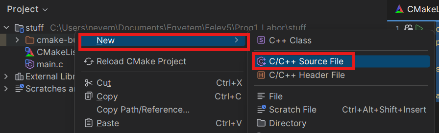

CLion
A CLion a JetBrains által fejlesztett C/C++ fejlesztőkörnyezet. Letölteni itt lehet: https://www.jetbrains.com/clion/download
2025 óta ingyenes személyes felhasználásra, viszont hallgatói licensz is kérhető hozzá: https://www.jetbrains.com/academy/student-pack
Fordítóprogram telepítése
A CLion fejlesztőkörnyezet automatikusan telepít egy MinGW (Minimalist Gnu for Windows), ami egyes GNU eszközök Windows portja. Ez magában foglalja a GCC fordítóprogramot, valamint a GDB nyomkövetőt (debugger) is.
Környezet beállítása
Ha letöltötted a programot és beléptél a JetBrains fiókoddal, akkor valami ilyesmi oldal fogad:

Válaszd a "New Project" opciót, ezen belül pedig a "C Executable" -t. Állítsd a standard verziót C11 -re, kb. ezt tanítja a tárgy is.
Okézd le ezt az ablakot. Ezután a CLion felajánlja a különböző toolchain-ek konfigurálását. CLion-ban egy toolchain egy fordítóprogramból, debuggerből és egy generátorból áll (erről később).

Mint már említettem, a CLion automatikusan telepít egy toolchain-t így neked ezzel nem kell fogalkoznod, nyomj az "Ok" gombra.
Hello, World!
A fejlesztőkörnyezet automatikusan készít egy main.c forrásfájlt. Ebbe a file-ba az alábbi kódrészletet másold be:
A jobb felső sarokban lévő kis zöld háromszögre kattintva indítsd el a programot.
CMake
Talán észrevehetted, hogy a projektedben megjelent egy CMakeLists.txt nevű file is.
A CLion a CMake nevű build system -et használja.
CMake működése röviden
A projekt "config" fileja a CMakeLists.txt. Ez a "script" írja le azt, hogy a projektben található forrásfájlokból
végül hogyan lesz használható program. A CMake egy deklaratív nyelv. Nem kell megmondani, hogy hogyan csinálja azt, amit csinál, csak azt kell megmondani, hogy mit csináljon.
A CMake önmagában nem build-system. A CMakeList alapján egy generátor-nak nevezett, tényleges build system -hez (pl. Make, Visual Studio, Ninja) generál projekt fileokat. A Ninja egy tökéletes választás, kicsi és gyors. Elvileg a CLion automatikusan telepíti.
Ezután a generátor build system (Ninja) a generált config alapján lefuttatja a fordítóprogramot, amely előállítja a végső bináris filet, ami már futtatható.

Alapértelmezett CMakeLists.txt értelmezése
cmake_minimum_required(VERSION 3.31)
project(stuff C)
set(CMAKE_C_STANDARD 11)
add_executable(stuff main.c)
cmake_minimum_required(VERSION 3.31): ez a sor csak azért van itt, mert kötelező. A minimum CMake verziót adja meg, amivel a projekt kompatibilis. Én a3.25-ös verziót szoktam használni, mivel néhány Linux distro még mindig ezt használja alapértelmezettként...project(stuff C): aprojectdeklarálja a projekt nevét (ez esetben "stuff"), aCpedig a projekt átlal használt nyelvet (nyelveket) adja meg.
Így is írható:project(stuff LANGUAGES C)set(CMAKE_C_STANDARD 11): megadja a projekt által használt C standard verziót. (C99, C11, C23, stb.)add_executable(stuff main.c): deklarál egy futtatható (executable) CMake target -et és forrásfájlként hozzáadja amain.cnevű filet.
CMake target
CMake-ben egy target lehet executable, library, stb. Ezek azok az entitások, amikből később futtatható (vagy csatolható) kód képződik.
Több fileos projektek
Warning
A több forrásfileból álló projektek a tananyagban ugyan később szerepelnek, viszont a háziban követelmény így dolgozni!
Jobb klikkelj a projekt mappájára:

Majd válaszd a New>C/C++ Source file opciót!

A következő felugró ablakban megadhatunk néhány dolgot:
- Name: a file neve. A fájlkiterjesztést (pl .c) nem kell megadni
- Type: a file típusa. Itt most a
.ckell. - Create associated header: Ha ez ki van pipálva, akkor létrejön egy ugyanilyen nevű header file is. Sokszor header-source párokat csinálunk, ezért ez egy gyakran használt kapcsoló lesz.
- Add to targets: A kiválasztott CMake target-ekhez automatikusan hozzáadja az új forrásfájlokat.
Csinálj egy foo.h - foo.c file párt!
A projekt fájlstruktúrában megjelentek a foo.h és foo.c fájlok, valamint a CMakeLists.txt -ben is hozzá lett adva a két új file.
Írd át úgy a programot, hogy a foo.h deklarál egy helloWorld függvényt, a foo.c definiálja ezt úgy, hogy a függvény a Hello, World! szöveget írja a konzolra, a main.c pedig meghívja ezt a helloWorld függvényt!
A CMakeList -ben automatikusan új kód generálodott:
A programhoz mostmár 3 file tartozik, ezek kódja alkotja majd a végső programot.
Note
A CMake okos és tudja, hogy a header fileokat nem fordítjuk le önmagukban, ezért ezeket egyébként ki fogja venni a végleges build-ből, viszont a fejlesztőkörnyezet csak úgy fog helyesen működni, ha a header fileok is hozzá vannak adva a targethez.
Note
Próbáld ki mi történik akkor, ha kiveszed a foo.c fájlt a targetből!
A kód ugyan lefordul, de a linker nem talál definíciót a helloWorld függvényhet (Undefined Reference error).
Ha ilyen hibát tapasztalsz, bizonyosodj meg arról, hogy az executable-hez hozzáadtad az új forrásfájlokat!